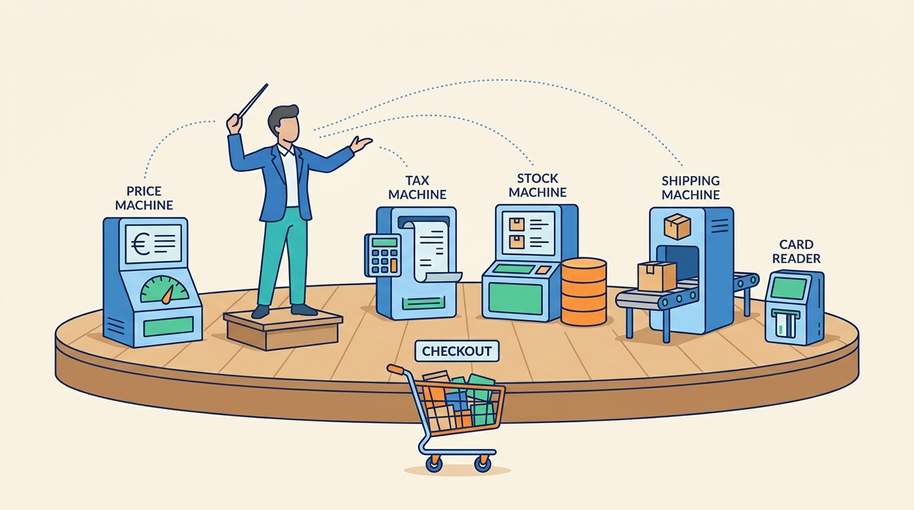

Part III — ORDER: Cart, Checkout, Payment and the Order Record
From Cart to Confirmation: Checkout Orchestration
AI-assisted: researched and written with Claude Code, images generated with the Gemini API. How this works

Image generated by Google Gemini (gemini-3-pro-image-preview)